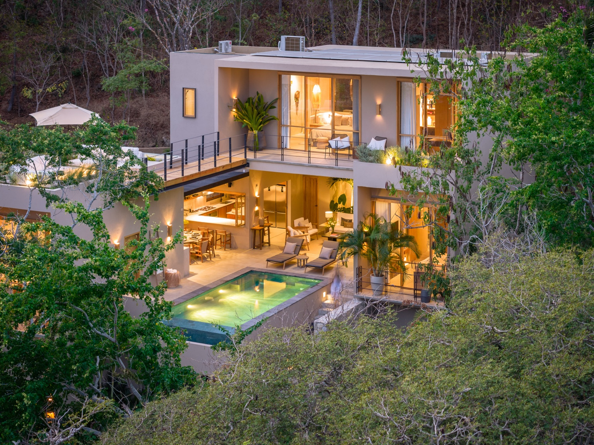

Beach days made easy
Two paddleboards and beach gear are provided, so moving between villa, pool, and cove feels effortless.
TreeTop Villa sits just above the shoreline with direct, easy access to a calm private cove and a safe swimming beach—while still being minutes from resort dining, shopping, and town.
The villa offers a rare blend of seclusion and convenience. Within the gated community, days can unfold between the beach, cove, terraces, pool deck, and neighborhood walks. When you want to venture out, Tangolunda’s cafés, restaurants, and shops are nearby.

Two paddleboards and beach gear are provided, so moving between villa, pool, and cove feels effortless.
Restaurants and cafés in Tangolunda are close enough for quick lunches and easy dinners out.
Santa Cruz and La Bocana are each within an easy drive for day trips, surfing, or marina access.